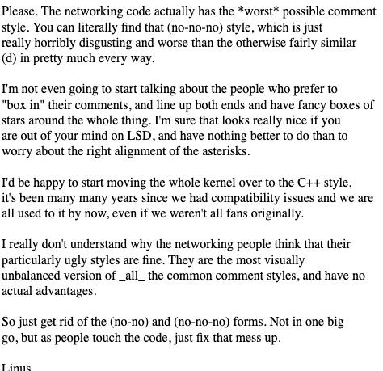

Open Source in the Real World John Jones '11 About Me: Live in Washington, DC 2011 Graduate (Computer Science) On Campus: The Dickinsonian, Student Senate Tech Committee, Office of Communications, Gray Hats, Delta Sig Where I've Worked: 2011 - 2016: Adfero 2016 - 2019: The Case Foundation 2020: The Capital One Lab What I Do Now: Lead research and exploration of new technology that can improve our business or our customers' experiences Work with product managers and designers to build early-stage, high-risk products Advocate and promote new technology within the organization Open Source Has Been a Huge Part of My Career Opportunity to constantly learn Helps me build things quickly I've lead programs exploring and promoting its use at nonprofits I use it daily to drive innovation at Capital One Open Source: Crash Course On How We Got Here (19** to today) Why should a developer care about open source software? Contributing to it builds your experience and elevates your visibility Using it gives you the powers of choice and control Why should a business care about open source software? It attracts talented developers to the organization It is a form of technical leadership whereby the organization can publicly demonstrate its talent Open source standards (good documentation, abstraction, testing) are also the halmarks of good software in general Some Big (Non-Tech) Names in OSS How Will You Professionally Interact with Open Source Software? As a User Most developer tools are open source Major platforms, languages, etc like NGINX, React, Node.JS, Python, Ruby on Rails, etc are open source As an At-Work Contributor Organizations often have open source projects they originated and maintain. React by Facebook Tensorflow by Google Ruby on Rails by 37 Signals Open source standards (good documentation, abstraction, testing) are also the halmarks of good software in general Open source community-originated tools like GitHub are used for internal project/code management As an Individual Contributor Contributions to larger projects that you "adopt" Sharing your own personal/passion projects Volunteering your time and talent to good causes Problems In Open Source Linus Torvalds in 2016:  Benevolent Dictator for Life (BDFL) Diversity & Inclusion The gender imbalance in open source remains profound: 95% of respondents are men; just 3% are women and 1% are non-binary. Women are about as likely as men (68% vs 73%) to say they are very interested in making future contributions, but less likely to say they are very likely to actually do so (45% vs 61%). (https://opensourcesurvey.org/2017/) Volunteer-Run Projects OpenSSL Babel.js RubyGems But The Future is Promising By the Numbers GitHub alone had 31m+ developers, 2.1m+ organizations, and 96m+ projects There was $22.48b in open source in exits in 2018 Hong Kong, Singapore, Egypt, Nigeria, and Bangladesh were the contributors of the most new users to GitHub AND GitHub Has Competition GitLab (Totally Open Source) BitBucket SourceForge Old Giants Like Microsoft Are In the Game Microsoft has heritage here. We were a developer tools company first and now, of course, we are all in on open source, and thats what really brings us together with GitHub, - Microsoft CEO Satya Nadella Thank You! johnjones4@gmail.com linkedin.com/in/johnjones4 Twitter & GitHub: johnjones4